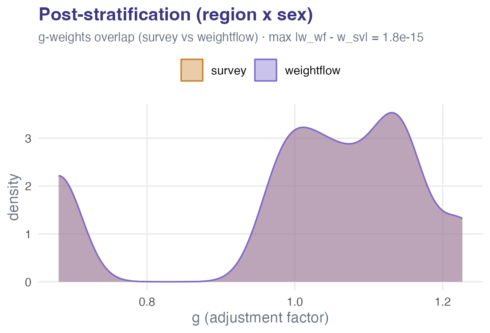
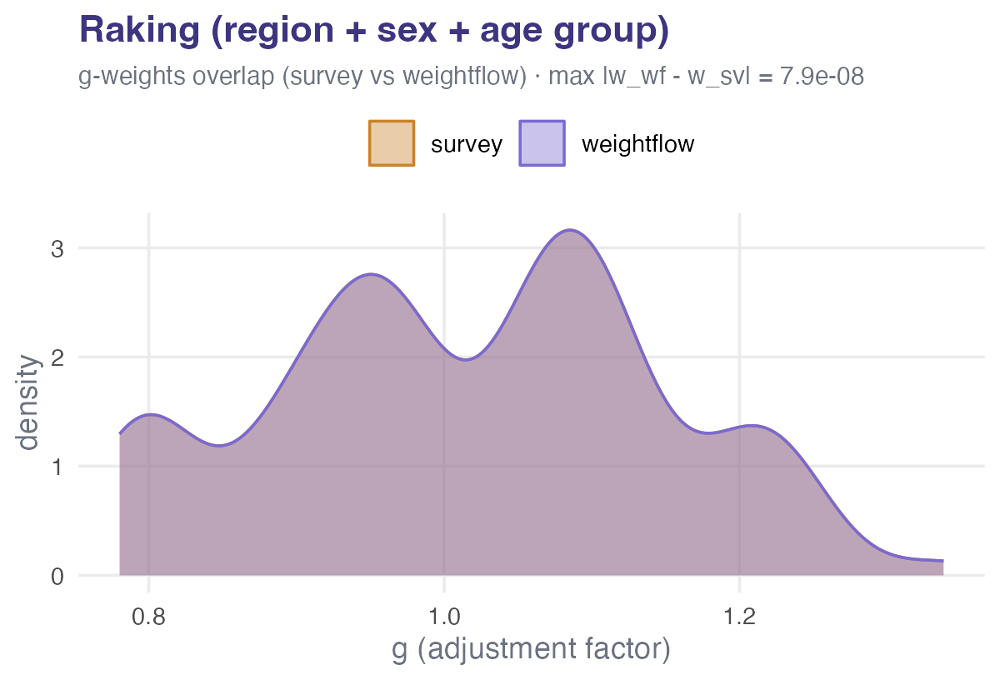
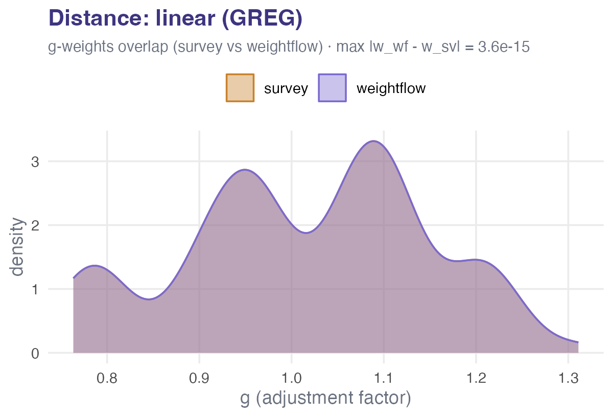
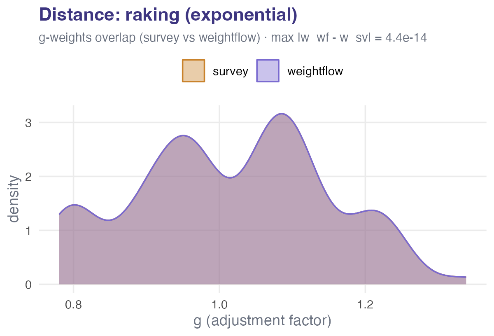
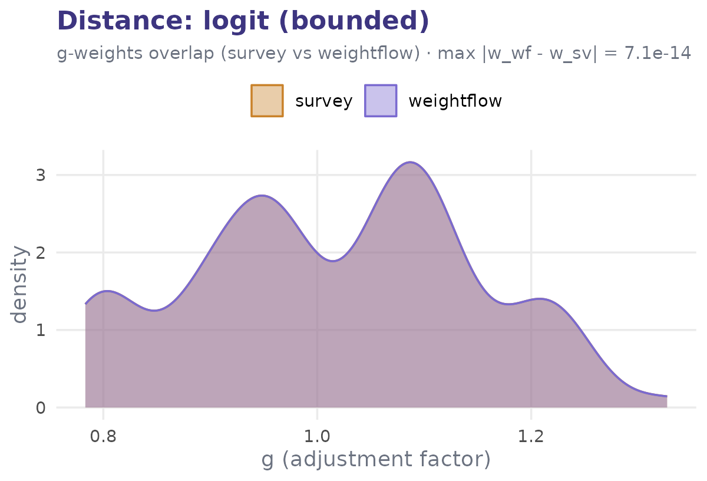
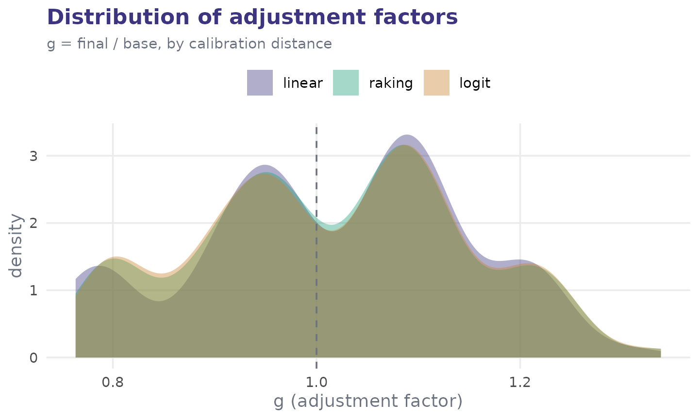
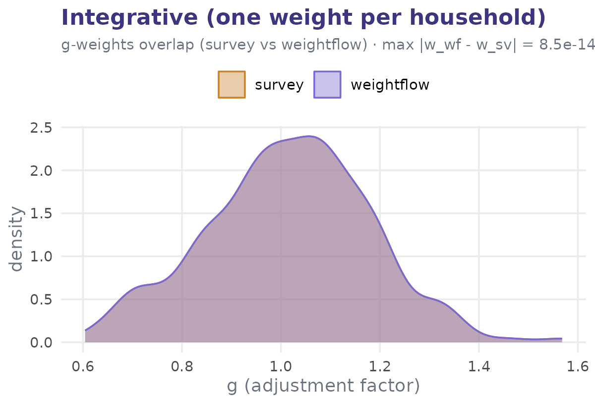
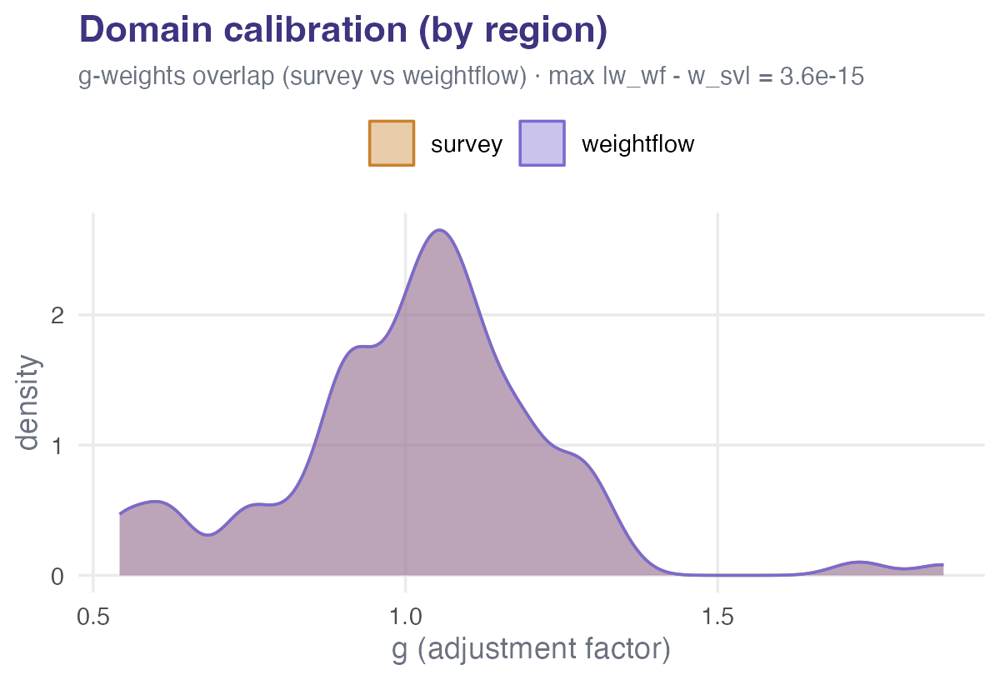

Validation against the survey package
Source:vignettes/validation-against-survey.Rmd
validation-against-survey.Rmdweightflow’s calibration is meant to reproduce the established
results of the survey package on every method they share,
while adding the staged cascade (eligibility, nonresponse, selection)
and a recipe-aware bootstrap on top. This vignette checks that agreement
directly and visually: on the same starting weights and the same control
totals, the two packages return the same weights
for
- post-stratification, raking and linear (GREG) calibration;
- the three calibration distance functions (linear, raking/exponential, logit);
- integrative calibration (one weight per household); and
- domain (partitioned) calibration.
Each method is shown with a scatter of the g-weights
(adjustment factors, g = final / base) of the two packages
against the y = x line; we also plot the
distribution of those adjustment factors and close with
a table of estimates. To make every unit comparable
one-to-one, the recipes below use only the calibration step (no dropping
or nonresponse), so no rows are removed.
d <- sample_survey
pop <- population
# a demographic breakdown gives the calibration more auxiliary variables
brk <- c(0, 30, 45, 60, Inf); lab <- c("18-30", "31-45", "46-60", "60+")
d$age_grp <- cut(d$age, brk, labels = lab)
pop$age_grp <- cut(pop$age, brk, labels = lab)
# tidy population margins reused throughout
reg_tab <- as.data.frame(table(region = pop$region))
sex_tab <- as.data.frame(table(sex = pop$sex))
age_tab <- as.data.frame(table(age_grp = pop$age_grp))
# model-matrix totals for the region + sex + age-group calibration
totals <- colSums(model.matrix(~ region + sex + age_grp, pop))
# weightflow brand palette (from the pkgdown site)
wf_primary <- "#3d3580"; wf_violet <- "#7a6ad0"
wf_green <- "#1d9e75"; wf_amber <- "#c9822b"; wf_grey <- "#6b7280"
theme_wf <- function() {
ggplot2::theme_minimal(base_size = 11) +
ggplot2::theme(
plot.title = ggplot2::element_text(face = "bold", colour = wf_primary),
plot.subtitle = ggplot2::element_text(colour = wf_grey, size = 9),
axis.title = ggplot2::element_text(colour = wf_grey),
legend.position = "top",
panel.grid.minor = ggplot2::element_blank())
}
# Helper: numeric agreement + the OVERLAP of the two g-weight (adjustment factor,
# g = final / base) distributions. Because the two packages agree, the survey and
# weightflow densities land exactly on top of each other.
agree <- numeric(0) # collect max|diff| per method
compare <- function(w_sv, w_wf, label, base = d$pw) {
diff <- max(abs(w_wf - w_sv))
agree[[label]] <<- diff # store for the final table
if (has_ggplot) {
g <- rbind(data.frame(package = "survey", g = w_sv / base),
data.frame(package = "weightflow", g = w_wf / base))
print(ggplot2::ggplot(g, ggplot2::aes(g, fill = package, colour = package)) +
ggplot2::geom_density(alpha = 0.4, linewidth = 0.5) +
ggplot2::scale_fill_manual(values = c(survey = wf_amber, weightflow = wf_violet)) +
ggplot2::scale_colour_manual(values = c(survey = wf_amber, weightflow = wf_violet)) +
ggplot2::labs(title = label,
subtitle = sprintf("g-weights overlap (survey vs weightflow) · max |w_wf - w_sv| = %.1e", diff),
x = "g (adjustment factor)", y = "density", fill = NULL, colour = NULL) +
theme_wf())
}
invisible(diff)
}Post-stratification
Post-stratifying to the joint population counts of
region × sex.
library(survey)
#> Loading required package: grid
#> Loading required package: Matrix
#> Loading required package: survival
#>
#> Attaching package: 'survey'
#> The following object is masked from 'package:graphics':
#>
#> dotchart
ps_tab <- as.data.frame(table(region = pop$region, sex = pop$sex))
wf <- weighting_spec(d, base_weights = pw) |>
step_calibrate(method = "poststratify", totals = ps_tab, count = "Freq") |>
prep()
w_wf <- wf$final_weight
des <- svydesign(ids = ~1, weights = ~pw, data = d)
des_ps <- postStratify(des, ~region + sex, ps_tab)
w_sv <- weights(des_ps)
compare(w_sv, w_wf, "Post-stratification (region x sex)")
Raking
Raking (iterative proportional fitting) to the region,
sex and age_grp margins. We tighten
survey’s convergence so both solve to the same
precision.
wf <- weighting_spec(d, base_weights = pw) |>
step_calibrate(method = "raking", totals = list(reg_tab, sex_tab, age_tab),
count = "Freq") |>
prep()
w_wf <- wf$final_weight
des_rk <- rake(des, list(~region, ~sex, ~age_grp), list(reg_tab, sex_tab, age_tab),
control = list(epsilon = 1e-10, maxit = 100))
w_sv <- weights(des_rk)
compare(w_sv, w_wf, "Raking (region + sex + age group)")
Calibration distances
Linear/GREG calibration to the totals of
~ region + sex + age_grp can be solved with any of the
three distance functions. weightflow’s calfun maps
one-to-one onto survey’s calfun. We keep the
g-weights from each to compare their distributions afterwards.
Linear (chi-square) distance – the GREG estimator
wf <- weighting_spec(d, base_weights = pw) |>
step_calibrate(method = "linear", formula = ~ region + sex + age_grp,
totals = totals, calfun = "linear") |>
prep()
w_wf <- wf$final_weight
w_sv <- weights(calibrate(des, ~ region + sex + age_grp, population = totals,
calfun = "linear"))
g_linear <- w_wf / d$pw
compare(w_sv, w_wf, "Distance: linear (GREG)")
Raking (exponential) distance – always-positive weights
wf <- weighting_spec(d, base_weights = pw) |>
step_calibrate(method = "linear", formula = ~ region + sex + age_grp,
totals = totals, calfun = "raking", maxit = 500, tol = 1e-10) |>
prep()
w_wf <- wf$final_weight
w_sv <- weights(calibrate(des, ~ region + sex + age_grp, population = totals,
calfun = "raking", maxit = 500, epsilon = 1e-10))
g_raking <- w_wf / d$pw
compare(w_sv, w_wf, "Distance: raking (exponential)")
Logit distance – bounded g-weights
bnds <- c(0.5, 2)
wf <- weighting_spec(d, base_weights = pw) |>
step_calibrate(method = "linear", formula = ~ region + sex + age_grp,
totals = totals, calfun = "logit", bounds = bnds,
maxit = 500, tol = 1e-10) |>
prep()
w_wf <- wf$final_weight
w_sv <- weights(calibrate(des, ~ region + sex + age_grp, population = totals,
calfun = "logit", bounds = bnds, maxit = 500, epsilon = 1e-10))
g_logit <- w_wf / d$pw
compare(w_sv, w_wf, "Distance: logit (bounded)")
Distribution of the adjustment factors
The distance function shapes how far the weights move. The linear
distance is symmetric (and can dip below the dashed line at
g = 1), raking keeps every weight positive, and logit is
bounded by construction.
gdist <- rbind(
data.frame(distance = "linear", g = g_linear),
data.frame(distance = "raking", g = g_raking),
data.frame(distance = "logit", g = g_logit))
gdist$distance <- factor(gdist$distance, levels = c("linear", "raking", "logit"))
ggplot2::ggplot(gdist, ggplot2::aes(g, fill = distance)) +
ggplot2::geom_density(alpha = 0.4, colour = NA) +
ggplot2::geom_vline(xintercept = 1, linetype = "dashed", colour = wf_grey) +
ggplot2::scale_fill_manual(values = c(linear = wf_primary, raking = wf_green,
logit = wf_amber)) +
ggplot2::labs(title = "Distribution of adjustment factors",
subtitle = "g = final / base, by calibration distance",
x = "g (adjustment factor)", y = "density", fill = NULL) +
theme_wf()
Integrative calibration (one weight per household)
When every person in a household must carry the same weight,
weightflow uses the Lemaitre-Dufour (1987) integrative method
(cluster = "household_id", equal_within_cluster = TRUE).
survey reaches the same result through
aggregate.stage (Vanderhoeft 2001). The base weight
pw is constant within household here, so the constraint is
well defined.
wf <- weighting_spec(d, base_weights = pw) |>
step_calibrate(method = "linear", formula = ~ region + sex + age_grp,
totals = totals, cluster = "household_id",
equal_within_cluster = TRUE) |>
prep()
w_wf <- wf$final_weight
des_hh <- svydesign(ids = ~household_id, weights = ~pw, data = d)
des_int <- calibrate(des_hh, ~ region + sex + age_grp, population = totals,
calfun = "linear", aggregate.stage = 1)
w_sv <- weights(des_int)
within_hh <- max(tapply(w_wf, d$household_id, function(z) diff(range(z))))
cat("max within-household weight range (weightflow):", within_hh, "\n")
#> max within-household weight range (weightflow): 0
compare(w_sv, w_wf, "Integrative (one weight per household)")
Domain (partitioned) calibration
weightflow can calibrate each domain independently to its own totals
in a single call with by =. Here each region is calibrated
to its own sex and age_grp distributions;
survey reaches the same weights by calibrating one region
at a time.
sex_by_region <- as.data.frame(table(region = pop$region, sex = pop$sex))
age_by_region <- as.data.frame(table(region = pop$region, age_grp = pop$age_grp))
wf <- weighting_spec(d, base_weights = pw) |>
step_calibrate(method = "linear", formula = ~ sex + age_grp,
totals = list(sex = sex_by_region, age_grp = age_by_region),
count = "Freq", by = "region") |>
prep()
w_wf <- wf$final_weight
w_sv <- numeric(nrow(d))
for (r in levels(d$region)) {
idx <- which(d$region == r)
des_r <- svydesign(ids = ~1, weights = ~pw, data = d[idx, ])
tot_r <- colSums(model.matrix(~ sex + age_grp, pop[pop$region == r, ]))
w_sv[idx] <- weights(calibrate(des_r, ~ sex + age_grp, population = tot_r,
calfun = "linear"))
}
compare(w_sv, w_wf, "Domain calibration (by region)")
Estimates agree too
Because the weights coincide, so do the estimates. Using the
raking-calibrated weights, we estimate a survey outcome (respondent
age) both ways and compare in a single table:
wf <- weighting_spec(d, base_weights = pw) |>
step_calibrate(method = "raking", totals = list(reg_tab, sex_tab, age_tab),
count = "Freq") |>
prep()
w_wf <- wf$final_weight
des_rk <- rake(des, list(~region, ~sex, ~age_grp), list(reg_tab, sex_tab, age_tab),
control = list(epsilon = 1e-10, maxit = 100))
est <- data.frame(
quantity = c("mean(age)", "total(age)"),
weightflow = c(weighted.mean(d$age, w_wf), sum(w_wf * d$age)),
survey = c(as.numeric(coef(svymean(~age, des_rk))),
as.numeric(coef(svytotal(~age, des_rk)))))
est$difference <- est$weightflow - est$survey
est
#> quantity weightflow survey difference
#> 1 mean(age) 42.38993 42.38993 -4.130882e-10
#> 2 total(age) 190542.74882 190542.74882 -1.856853e-06The design-based standard errors (from survey, or from
weightflow’s recipe-aware bootstrap) are the subject of the Variance
estimation article; here the point is that the calibrated point
estimates are the same.
Agreement summary
Across every method and distance, weightflow reproduces
survey to numerical tolerance. The closed-form methods
(post-stratification, linear) agree to machine precision; the iterative
ones (raking, logit, integrative) agree to the shared convergence
tolerance.
data.frame(method = names(agree), `max abs weight difference` = unname(agree),
check.names = FALSE, row.names = NULL)
#> method max abs weight difference
#> 1 Post-stratification (region x sex) 1.776357e-15
#> 2 Raking (region + sex + age group) 7.927345e-08
#> 3 Distance: linear (GREG) 3.552714e-15
#> 4 Distance: raking (exponential) 9.016554e-08
#> 5 Distance: logit (bounded) 2.999771e-07
#> 6 Integrative (one weight per household) 8.348877e-14
#> 7 Domain calibration (by region) 1.776357e-15What weightflow adds
The point of agreement is trust: where the methods overlap,
weightflow returns exactly what survey does. On top of that
shared core, weightflow contributes the staged cascade
(unknown eligibility, ineligible dropping, within-household selection,
and person- or household-level nonresponse, each as a pipeable step with
diagnostics), the tidy totals and
domain interfaces shown above, and a bootstrap
that re-applies the whole recipe on each replicate, so the
variance reflects every adjustment (see the Variance estimation
article). For design-based inference you can always export the final
weights back to survey/srvyr. ```